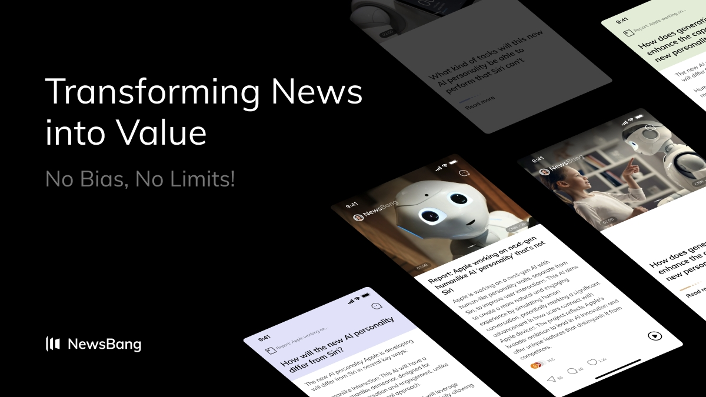
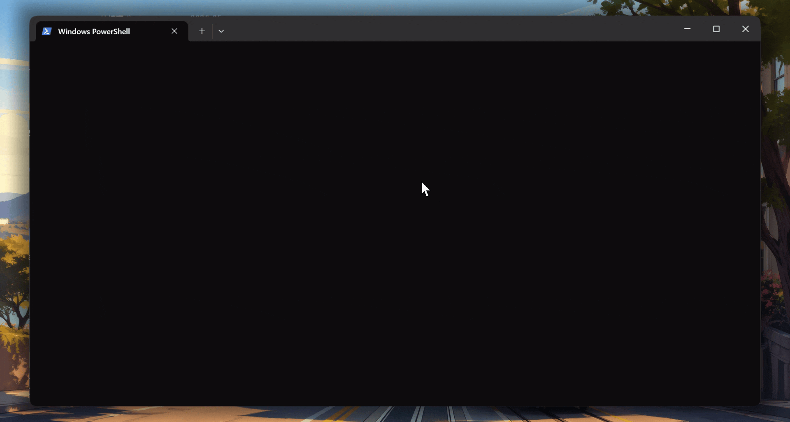

Journey
从使用 AI，到理解用户，再到主动构建产品
由创作表达欲肇始，经过增长、数据分析历程，最后汇聚成今天的 Builder 身份。
AI Creator
长期使用 LLM 做视频、文章、生图等创作，先从表达效率和内容生成理解 AI。
AI Growth
在 NewsBang 增长实习，从用户反馈渠道、KOL 合作和用户分析理解产品增长。
Data Analyst
学校数据挖掘与浙商证券实习经历，让我学会用结构化数据支持判断、报告和观点形成。
Builder
现在的我，更关心如何把观察转成产品，把产品组织成用户愿意持续返回的体验。
Data & Growth
我的数据分析与用户增长经验，来自真实冷启动环境
这段经历始于产品内测阶段，彼时连安卓安装包都还不完整。这是一次关于冷启动、用户洞察和增长执行的旅程。
KOL 匹配与冷启动触达
2 个月内向 300+ 账户发送合作信息，其中 65 个账号有回复并愿意继续合作商讨。
Product Hunt 打榜执行
在星期二当天联动 KOL、Telegram 群、Discord 和预约用户 DM 进行推广，最终拿到日榜榜二。
推广物料协作制作
使用 Figma + Canvas 协作完成 promo video、poster 以及 X meme post 制作。
核心用户维护与访谈
持续运营 Discord + Telegram 社群，交接时总人数 200+；并完成 3 位核心用户的深度访谈。
用户行为数据分析
从十余个埋点获取全球用户行为数据，拆解停留时长、功能偏好、地理位置分布与活跃时间，再把结果反馈给产品团队并用于调整推广策略。

NewsBang · AI Growth Internship
从社群运营、KOL 拓展、打榜执行到埋点分析，我第一次系统地理解了增长不只是推广，而是持续理解用户并校正产品。
Attention Revolution
我反复观察到三件事
在做 AI 产品、读用户反馈、看交互行为的过程中，我越来越在意注意力如何被获取、维持与转化。
信息噪点越来越多
获取、整理、重组信息的成本，被模型迅速压低。
生成越来越容易
文本、图像、原型和界面都更容易被生成，表达门槛持续下降。
注意力越来越稀缺
用户真正愿意停留、表达、反复返回的时间，反而更难获得。
我开始研究注意力如何转化为价值
我关心的不是 AI 能生成什么，而是 AI 如何优化用户注意力，并把注意力变成真实价值。
Project 01

FocusAI 拼豆工作台
一个把专注反馈、3D 拼豆设计和游戏化机制结合起来的 WebGL 产品。
Focus_beads
React
Three.js
WebGL
Tailwind CSS
Product Demo
拼豆预览、专注推进和熨烫效果演示。
Problem
传统专注工具通常只给出倒计时、分数或状态反馈，缺少可感知、可沉浸的过程性体验。
Insight
如果把专注转译成一个可以被看见、可分享的过程，专注本身也能搭建一个艺术品。
Build
- 用 React + Three.js / WebGL 构建 3D 拼豆设计和预览工具
- 建立 221 色标准拼豆颜色映射，完成自动配色匹配
- 设计真实豆板、圆柱插销、空心珠到熨烫后几何体的转换
- 接入 FocusAI API，每 2 秒轮询专注状态驱动进度
- 用 useReducer 状态机组织 IDLE 到 COMPLETED 的完整流程
Result
完成了一个把专注反馈转化为可视化构建体验的 AI Native 交互原型。
Reflection
用户坚持一个行为，很多时候依赖的不是提醒，而是是否能感受到自己正在完成某件事。
Project 02

Speak 4 Me
把“读一封信”重构成可交互、逐层披露的 AI 阅读体验。
Next.js
SQLite
LangChain
AI Reading
Product Demo
对话阅读、逐层 reveal 和 peek 交互演示。
Problem
传统信件阅读通常一次性展开，信息密度高、情绪压力大，收信人缺少缓冲和引导。
Insight
很多重要表达不适合被一次性读完，更适合在对话中被理解、被揭示、被消化。
Build
- 使用 Next.js、SQLite、LangChain 组件构建产品
- 发信人上传信件并完成内容解析
- 收信人通过信件码进入会话式阅读空间
- 支持对话、逐段 reveal、peek 式揭示原文
- 把静态文档阅读改造成边聊边读的节奏体验
Result
这个项目把静态文档阅读改造成了带节奏感的交互体验，也验证了 AI 作为转述者可以成为新的内容消费方式。
Reflection
用户并不总需要更快拿到全部信息，很多时候更需要被更好地引导进入信息。
Project 03
SUFE Calendar
从 syllabus 出发，把课程要求转译为每日任务的学习 Agent。
SQLite
Node.js
Agent Workflow
Task Planning

Product Demo
syllabus 解析、任务生成和日历排程演示。
Problem
学生面对 syllabus、作业、考试和复习任务时，知道规则，但很难把长期要求真正转成日常执行。
Insight
学习管理的问题常常不是信息缺失，而是结构存在但不可操作。
Build
- 使用 SQLite + Node.js 框架搭建产品
- 内置对话与日历安排 Agent
- 解析课程 syllabus 并结合对话生成每日任务
- 支持多种任务管理方式
- 覆盖文件解析、学期规划、每日对话、复习管理的完整链路
Result
这个项目证明了 AI 可以把抽象课程要求转成可执行的日程系统。
Reflection
好的 Agent 不只是回答问题，而是持续维护用户的时间结构和行动秩序。
Why Kimi
Why I'm Interested in AI Growth
我对 AI 的兴趣，不停留在模型能力本身，而在于产品、表达、用户心智与长期使用价值的交叉位置。
为什么做 AI 产品
因为我想把模型能力变成真正可被使用、可被感知、可被反复返回的体验。
为什么研究注意力
因为信息和创造变便宜后，真正稀缺的已经不是内容，而是用户本身的意愿能否稳定地输出。
为什么关注用户表达
从用户反馈分析到信件阅读体验，我越来越相信用户表达本身就是AI时代最珍贵的数据。
为什么关注 Agent
因为 Agent 不是简单回答问题，而是能够维护上下文、组织行动，保持用户的核心注意力。
我希望参与构建能够长期占据用户注意力、创造真实价值的 AI 产品。